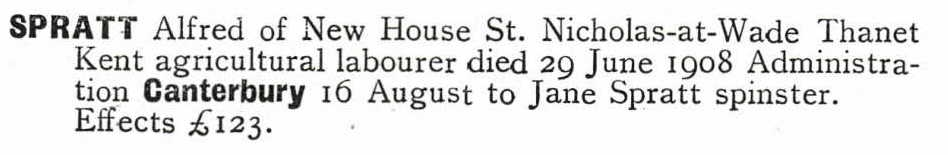
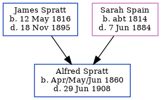

Alfred Spratt 1860 - 1908
[ Home ] | [ Calendar ] | [ Surnames Index ] | [ Errors ] | [ Family History ]The child of James Spratt and Sarah Spain, Alfred Spratt, the great-great-uncle of Nigel Horne, was born in St Nicholas-at-Wade, Kent, England in Apr/May/Jun 18601,2,3,4,5,6 and baptised there on 5 Aug 1860. Like his father, he was an agricultural labourer.
During his life, he was living at The Row in St Nicholas-at-Wade on 7 Apr 18618, at Parish Cottage in St Nicholas-at-Wade on 2 Apr 187111, and at The Street in St Nicholas-at-Wade on 7 Apr 189110 (the same place as his father had been living on 5 Apr 1891) and on 31 Mar 19019.
He died on 29 Jun 1908 in Thanet, Kent, England6,7 and was buried in St Nicholas-at-Wade on 3 Jul 1908.
Parents
- James was born on 12 May 1816
- Sarah was born c. 1814
Citations
- 1861 England Census Online publication - Provo, UT, USA: The Generations Network, Inc., 2005.Original data - Census Returns of England and Wales, 1861. Kew, Surrey, England: The National Archives of the UK (TNA): Public Record Office (PRO), 1861. Data imaged from the National
- 1871 England Census Online publication - Provo, UT, USA: The Generations Network, Inc., 2004.Original data - Census Returns of England and Wales, 1871. Kew, Surrey, England: The National Archives of the UK (TNA): Public Record Office (PRO), 1871. Data imaged from the National
- 1891 England Census Online publication - Provo, UT, USA: The Generations Network, Inc., 2005.Original data - Census Returns of England and Wales, 1891. Kew, Surrey, England: The National Archives of the UK (TNA): Public Record Office (PRO), 1891. Data imaged from The National
- 1901 England Census Online publication - Provo, UT, USA: The Generations Network, Inc., 2005.Original data - Census Returns of England and Wales, 1901. Kew, Surrey, England: The National Archives of the UK (TNA): Public Record Office (PRO), 1901. Data imaged from the National
- England & Wales, FreeBMD Birth Index, 1837-1915 Online publication - Provo, UT, USA: The Generations Network, Inc., 2006.Original data - General Register Office. England and Wales Civil Registration Indexes. London, England: General Register Office. © Crown copyright. Published by permission of the Cont
- England & Wales, FreeBMD Death Index: 1837-1915 Online publication - Provo, UT, USA: The Generations Network, Inc., 2006.Original data - General Register Office. England and Wales Civil Registration Indexes. London, England: General Register Office. © Crown copyright. Published by permission of the Cont
- England & Wales, National Probate Calendar (Index of Wills and Administrations),1861-1941 Online publication - Provo, UT, USA: Ancestry.com Operations Inc, 2010.Original data - Principal Probate Registry. Calendar of the Grants of Probate and Letters of Administration made in the Probate Registries of the High Court of Justice in England. Londo
- 1861 England, Wales & Scotland Census - Findmypast (was age 0 and the son of the head of the household)
- 1901 England, Wales & Scotland Census - Findmypast (was age 41 and the head of the household)
- 1891 England, Wales & Scotland Census - Findmypast (was age 31 and the son of the head of the household)
- 1871 England, Wales & Scotland Census - Findmypast (was age 10 and the son of the head of the household)
Media
Alfred Spratt - probate

England & Wales births 1837-2006 - BMD/B/1860/2/AZ/001118/138
1901 England, Wales & Scotland Census - GBC/1901/0005517182
England & Wales deaths 1837-2007 - BMD/D/1908/3/AZ/000291/314
1891 England, Wales & Scotland Census Transcription - GBC-1891-0005854646
England Births & Baptisms 1538-1975 - R_884659752
Kent Baptisms - GBPRS/CANT/B/96801757
Family Tree
Map
Generated by ged2site. Last updated on Jul 3, 2024
Known Issues
Date of baptism (5 Aug 1860) before date of birth (Apr/May/Jun 1860)
Burial date (3 Jul 1908) has no citations
Census information missing between Census UK 1871 and Census UK 1891